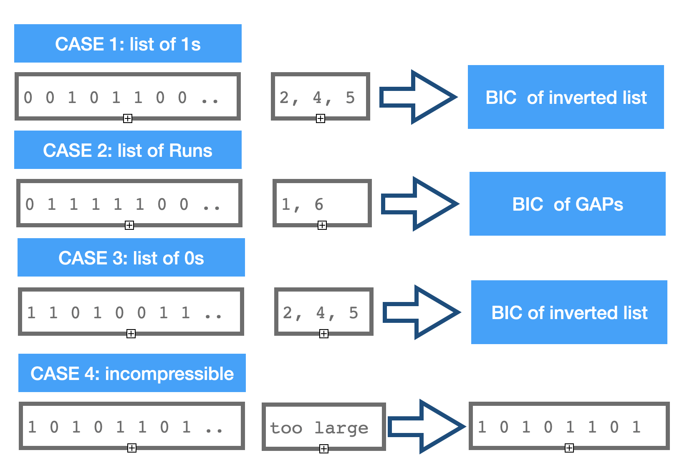
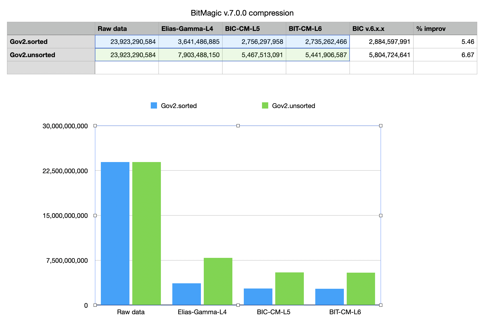
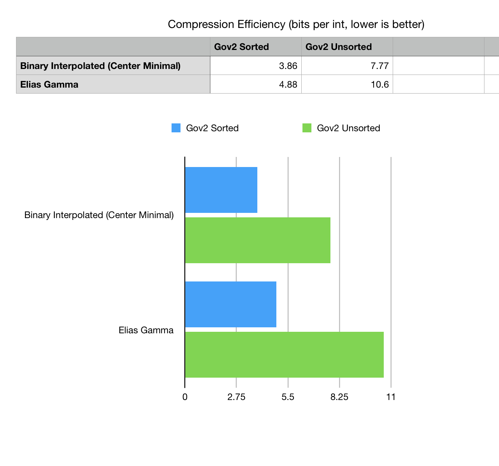
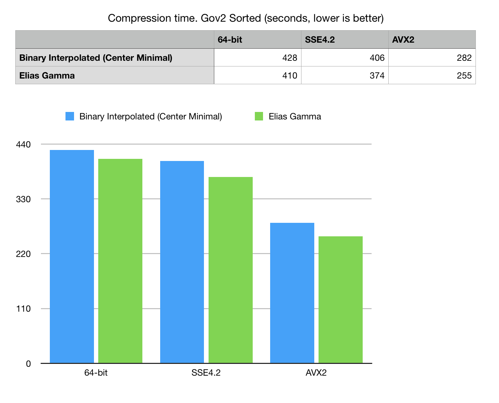
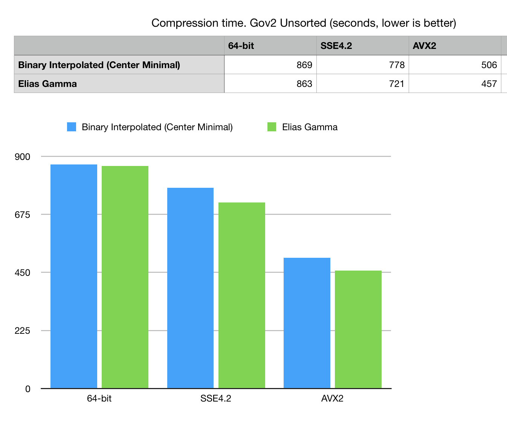

Application notes on Binary Interpolative Coding of bit-vectors
Anatoliy Kuznetsov, Aug, 2020Introduction
BitMagic Library implements an advanced version of Binary Interpolative Coding as a workhorse compression algorithm for bit-vector compression and compression of bit-transposed sparse vectors.
This application notes discuss design challenges, benchmarking statistics and practical observations on the topic.
Sorted integer lists are commonly used in information retrieval and databases or as part of an application compression scheme. Bit-vectors are often used as a representation of sorted lists as they implement highly efficient data parallel set-theoretical operations such as set union (OR), set intersect (AND), set MINUS (AND NOT), etc.
Binary Interpolative Coding describes an approach to compress inverted lists, which are lists/arrays of sorted, always growing integers. Information Retrieval application for this is a list of document ids for a specific documents mentioned term (TF/IDF).
Compression of inverted lists is a crucial importance for a well functioning information retrieval system as it manages gigabytes and terabytes of compressed lists. That is why so much attention paid to this problem.
Better compression pays off, because disk is the new tape!
Binary Interpolative Coding in a nutshell
BIC relies on a few but very important key properties of inverted lists sequences
- You know the min and max values of a compressed sequence
- The sequence is sorted and every next value is always higher (no duplicates allowed)
Bit-vectors and sorted integer lists are interchnagable, so Binary Interpolative Coding can be spplied to bit-vector compression.
Knowing this we can always tell that value of the element N of our sequence cannot be lower than min+N. This properties is used to develop a system of minimal binary codes with a centered minimal binary code assignment, where values in in the centre of the range are assigned the shorter codewords under assumption that the middle element to be about half of the upper bound.
Very good explanation of BIC method is published by Giulio Ermanno Pibiri [1]. I would highly recommend to anyone in this topic to read the manuscript.
BIC algorithm is recursive oriented as a binary tree and deceptively simple in its minimal implementation.
void write(uint32_t x, uint32_t r)
{
assert(x <= r);
if (!r) return;
uint32_t b = msb(r) + 1; append(x, b);
}
void encode(uint32_t const* S, uint32_t n, uint32_t lo, uint32_t hi)
{
if (!n) return;
assert(lo <= hi);
uint32_t m = n / 2;
uint32_t x = S[m];
write(x - lo - m, hi - lo - n + 1);
encode(S, m, lo, x - 1);
encode(S + m + 1, n - m - 1, x + 1, hi);
}
Listing 1. Code from Giulio Ermanno Pibiri. "On Implementing the Binary Interpolative Coding Algorithm."[1]
Decoding is a natural reverse of the encoding process.
BitMagic Implementation of Binary Interpolative Coding
BitMagic Library focus is efficient bit-vectors for various applications of scientific computing (not just Information Retrieval and Natural Language Processing). Bit-vectors and inverted lists are interchangeable concepts. Each bit-vector can be represented as a list of integers (indexes of 1 bits) and each inverted list can be transformed into a bit-vector and vice-versa.
{ 0, 0, 1, 0, 1, 1} ==> { 2, 4, 5 }
This observation makes possible to encode bit-vectors using BIC scheme.
BitMagic library implements sparse / compressed variant of bit-vectors.
- Bit-vector is implemented as a collection of separate blocks (size of 64K bits)
- Blocks are organized into a fixed depth hierarchical compression structure so that empty(all zero bit) blocks are not allocated. Fully filled blocks (all 111…1s) are also not allocated making BitMagic very efficient for the applications generating distributions of dense bit-vectors (often the case for bio-informatics)
- Blocks with a clear structure of GAPs are also specifically represented using a form or RLE encoding.
Binary Interpolative Coding in BitMagic works on per-block basis. It means it limits its compression window by 64K bits fitting “short unsigned int” data type.
There are pluses and minuses to this decision worth discussion.
One and probably the only negative side effect is some reduction of the compression ratio. Restart on each block interrupts the interpolation and needs a saved checkpoint in the compression stream so it somewhat negatively affects the final compression in a few popular benchmarks derived from the English language (like Gov2).
This is not necessarily always the case for other fields.
Pluses of small window approach
- Block based compression gives compressor a chance to change the decision on how the next block is be encoded. BitMagic library implements various heuristics to make encoding more efficient for different cases and distributions of bits not typical for English language IR but common in scientific computing like bioinformatics. For example: in some cases it is practical not to encode the block at all or use other alternative methods (more on that later).
- Performance of encode and especially decode. BIC is defined as a binary division recursive algorithm and it makes it very elegant. Limiting the algorithm to a smaller window limits depth of recursion (which is good) and fits data into CPU L1 cache improving performance (even better).
- Random range decompression. Since the encoded vectors is block based it becomes possible to implement a range based decode: read data from address X to Y as [X..Y] leaving the rest of the decoded bit-vector empty. This is a very important feature of BitMagic library, you can configure serializer to add bookmarks and implement range decode, giving an minimal penalty fast access to data because decoder will be able to skip some computationally expensive compressed blocks and quickly go to the target range. Again I would like to add a bring it to attention of bioinformatics people who often implement range decode based on top of the ZIP compression of text pages. BitMagic approach is a very viable alternative to that.
Compression window escalation
With all the advocated pluses of small window approach, compression ration is an important factor. BitMagic v.7.0.0 implements a compression window size escalation done via additional analysis of a group of of bit-blocks in the upper level hierarchy of sparse bit-vector. If the whole upper level group of blocks (256 blocks) is very sparse (BM uses compression level threshold) it compresses the whole top level group using BIC. It has to use 32-bit unsigned int algorithm because group of blocks address space expansion. This saves some 5-6% space over the Gov2 corpus without notable performance degradation in the range based decode. 5% may not sound like a lot but in big systems it is a huge improvement.
Useful heuristics
In the process of compression BitMagic evaluates a few major heuristics to improve bit-block encoding.

Case 1. Block has below threshold amount of set bits, transformed into a list of short ints and compressed using binary interpolative coding.
Case 2. Block forms a dominant pattern of runs of 111s and 000s, number of runs is less than population count. In this case block is transformed into GAPs and encoded using BIC. Please note that the integer list here encodes positions when 1s and 0s change. This case is important for IR benchmarks like Gov2 Sorted because sort and frequency based transforms are important for improvement compression (demonstrated by BWT and other sort based methods). It is also important for bio-informatics compression of alignments, which are often produce GAP vectors.
Case 3. Block is very dense, so number of 0s is below the threshold amount for case 1. It means we can apply binary inversion function to this block and encode it this way. This case if often discarded in information retrieval and dropped as a “information noise” as stop word filtering. Use cases derived from other areas like bio-informatics or chem-informatics benefit from this encoding.
Case 4. Block is neither dense or sparse, lots of bits set. It is ether high entropy (often the case of DNA compression) or already represents some compressed data. Binary Interpolated Encoding (Center Minimal) has its limits and can negatively compress (inflate) when applied to such cases. BitMagic does not compress such blocks, keeping it as is in the serialized format.
Optimization notes
As we can see from the described set of heuristics, bit-block can be compressed in various different ways. It is certainly possible to run different variants and then compare results to pick the best compression. It is not practical from the performance point of view.
Instead BitMagic evaluates key characteristics of blocks: number of bits set (population count) and number of runs (gap count). The third characteristic - number of bit not set is trivially computed as MAX_POSSIBLE_BITS - POPULATION_COUNT. Picking the minimum gives us the choice of heuristics as a variant of compression or leaving it uncompressed.
The population counting algorithm while not quite trivial being discussed many times in various publications like Hackers Delight so lets take a look at the algorithm for evaluation of number of GAPs(runs) in the block. Proposed algorithm is based on LUT facilitated pop count.
# define BM_INCWORD_BITCOUNT(cnt, w) cnt += \
bm::bit_count_table::_count[(unsigned char)(w)] + \
bm::bit_count_table::_count[(unsigned char)((w) >> 8)] + \
bm::bit_count_table::_count[(unsigned char)((w) >> 16)] + \
bm::bit_count_table::_count[(unsigned char)((w) >> 24)];
unsigned bit_block_change32(const bm::word_t* block, unsigned size)
{
unsigned gap_count = 1;
bm::word_t w, w0, w_prev, w_l;
w = w0 = *block;
const int w_shift = int(sizeof(w) * 8 - 1);
w ^= (w >> 1);
BM_INCWORD_BITCOUNT(gap_count, w);
gap_count -= (w_prev = (w0 >> w_shift));
const bm::word_t* block_end = block + size;
for (++block; block < block_end; ++block)
{
w = w0 = *block;
++gap_count;
if (!w)
{
gap_count -= !w_prev;
w_prev = 0;
}
else
{
w ^= (w >> 1);
BM_INCWORD_BITCOUNT(gap_count, w);
w_l = w0 & 1;
gap_count -= (w0 >> w_shift);
gap_count -= !(w_prev ^ w_l);
w_prev = (w0 >> w_shift);
}
} // for
return gap_count;
}
Listing 2. Algorithm to compute number of GAPS(runs) in a bit-block.
It turned out to be possible to come up with a better algorithm for SSE4.2 and AVX. SIMD would allow us to use either hardware pop count (available in SSE4.2) or AVX2 256-bit parallel pop count. SIMD greatly accelerates calculation of pre-compression statistics for optimal decision on the choice of binary interpolative coding algorithm.
SSE4.2
void sse42_bit_block_calc_change_bc(const __m128i* BMRESTRICT block,
unsigned* gc, unsigned* bc)
{
const __m128i* block_end =
( __m128i*)((bm::word_t*)(block) + bm::set_block_size);
__m128i m1COshft, m2COshft;
unsigned w0 = *((bm::word_t*)(block));
unsigned bit_count = 0;
unsigned gap_count = 1;
unsigned co2, co1 = 0;
for (;block < block_end; block += 2)
{
__m128i m1A = _mm_load_si128(block);
__m128i m2A = _mm_load_si128(block+1);
{
bm::id64_t m0 = _mm_extract_epi64(m1A, 0);
bm::id64_t m1 = _mm_extract_epi64(m1A, 1);
bit_count += unsigned(_mm_popcnt_u64(m0) + _mm_popcnt_u64(m1));
m0 = _mm_extract_epi64(m2A, 0);
m1 = _mm_extract_epi64(m2A, 1);
bit_count += unsigned(_mm_popcnt_u64(m0) + _mm_popcnt_u64(m1));
}
__m128i m1CO = _mm_srli_epi32(m1A, 31);
__m128i m2CO = _mm_srli_epi32(m2A, 31);
co2 = _mm_extract_epi32(m1CO, 3);
__m128i m1As = _mm_slli_epi32(m1A, 1); // (block[i] << 1u)
__m128i m2As = _mm_slli_epi32(m2A, 1);
m1COshft = _mm_slli_si128 (m1CO, 4); // byte shift left by 1 int32
m1COshft = _mm_insert_epi32 (m1COshft, co1, 0);
co1 = co2;
co2 = _mm_extract_epi32(m2CO, 3);
m2COshft = _mm_slli_si128 (m2CO, 4);
m2COshft = _mm_insert_epi32 (m2COshft, co1, 0);
m1As = _mm_or_si128(m1As, m1COshft); // block[i] |= co_flag
m2As = _mm_or_si128(m2As, m2COshft);
co1 = co2;
// we now have two shifted SSE4 regs with carry-over
m1A = _mm_xor_si128(m1A, m1As); // w ^= (w >> 1);
m2A = _mm_xor_si128(m2A, m2As);
{
bm::id64_t m0 = _mm_extract_epi64(m1A, 0);
bm::id64_t m1 = _mm_extract_epi64(m1A, 1);
gap_count += unsigned(_mm_popcnt_u64(m0) + _mm_popcnt_u64(m1));
}
bm::id64_t m0 = _mm_extract_epi64(m2A, 0);
bm::id64_t m1 = _mm_extract_epi64(m2A, 1);
gap_count += unsigned(_mm_popcnt_u64(m0) + _mm_popcnt_u64(m1));
}
gap_count -= (w0 & 1u); // correct initial carry-in error
*gc = gap_count;
*bc = bit_count;
}
Listing 3. SSE4.2 Algorithm to compute number of GAPS(runs) in a bit-block.
AVX2
Implementation uses AVX2 Harley-Seal popcount. The algorithm is based on "Faster Population Counts using AVX2 Instructions" by Daniel Lemire, Nathan Kurz and Wojciech Mula. https://arxiv.org/abs/1611.07612
#define BM_CSA256(h, l, a, b, c) \
{ \
__m256i u = _mm256_xor_si256(a, b); \
h = _mm256_or_si256(_mm256_and_si256(a, b), _mm256_and_si256(u, c)); \
l = _mm256_xor_si256(u, c); \
}
#define BM_AVX2_BIT_COUNT(ret, v) \
{ \
__m256i lo = _mm256_and_si256(v, low_mask); \
__m256i hi = _mm256_and_si256(_mm256_srli_epi16(v, 4), low_mask); \
__m256i cnt1 = _mm256_shuffle_epi8(lookup1, lo); \
__m256i cnt2 = _mm256_shuffle_epi8(lookup2, hi); \
ret = _mm256_sad_epu8(cnt1, cnt2); \
}
#define BM_AVX2_DECL_LOOKUP1 \
__m256i lookup1 = _mm256_setr_epi8(4, 5, 5, 6, 5, 6, 6, 7, 5, 6, 6, 7, 6, 7, 7, 8, \
4, 5, 5, 6, 5, 6, 6, 7, 5, 6, 6, 7, 6, 7, 7, 8);
#define BM_AVX2_DECL_LOOKUP2 \
__m256i lookup2 = _mm256_setr_epi8(4, 3, 3, 2, 3, 2, 2, 1, 3, 2, 2, 1, 2, 1, 1, 0, \
4, 3, 3, 2, 3, 2, 2, 1, 3, 2, 2, 1, 2, 1, 1, 0);
#define BM_AVX2_POPCNT_PROLOG \
BM_AVX2_DECL_LOOKUP1 \
BM_AVX2_DECL_LOOKUP2 \
__m256i low_mask = _mm256_set1_epi8(0x0f); \
__m256i bc;
void avx2_bit_block_calc_change_bc(const __m256i* BMRESTRICT block,
unsigned* gcount, unsigned* bcount)
{
BM_AVX2_POPCNT_PROLOG;
const __m256i* block_end =
(const __m256i*)((bm::word_t*)(block) + bm::set_block_size);
__m256i m1COshft, m2COshft;
__m256i mCOidx = _mm256_set_epi32(6, 5, 4, 3, 2, 1, 0, 0);
__m256i cntAcc = _mm256_setzero_si256();
unsigned w0 = *((bm::word_t*)(block));
unsigned bit_count = 0;
unsigned gap_count = 1;
bm::id64_t BM_ALIGN32 cnt_v[4] BM_ALIGN32ATTR;
unsigned co2, co1 = 0;
for (;block < block_end; block+=2)
{
__m256i m1A = _mm256_load_si256(block);
__m256i m2A = _mm256_load_si256(block+1);
// popcount
{
bm::id64_t* b64 = (bm::id64_t*)block;
bit_count += _mm_popcnt_u64(b64[0]) + _mm_popcnt_u64(b64[1]);
bit_count += _mm_popcnt_u64(b64[2]) + _mm_popcnt_u64(b64[3]);
bit_count += _mm_popcnt_u64(b64[4]) + _mm_popcnt_u64(b64[5]);
bit_count += _mm_popcnt_u64(b64[6]) + _mm_popcnt_u64(b64[7]);
}
__m256i m1CO = _mm256_srli_epi32(m1A, 31);
__m256i m2CO = _mm256_srli_epi32(m2A, 31);
co2 = _mm256_extract_epi32(m1CO, 7);
__m256i m1As = _mm256_slli_epi32(m1A, 1); // (block[i] << 1u)
__m256i m2As = _mm256_slli_epi32(m2A, 1);
// shift CO flags using +1 permute indexes, add CO to v[0]
m1COshft = _mm256_permutevar8x32_epi32(m1CO, mCOidx);
m1COshft = _mm256_insert_epi32(m1COshft, co1, 0); // v[0] = co_flag
co1 = co2;
co2 = _mm256_extract_epi32(m2CO, 7);
m2COshft = _mm256_permutevar8x32_epi32(m2CO, mCOidx);
m2COshft = _mm256_insert_epi32(m2COshft, co1, 0);
m1As = _mm256_or_si256(m1As, m1COshft); // block[i] |= co_flag
m2As = _mm256_or_si256(m2As, m2COshft);
co1 = co2;
// we now have two shifted AVX2 regs with carry-over
m1A = _mm256_xor_si256(m1A, m1As); // w ^= (w >> 1);
m2A = _mm256_xor_si256(m2A, m2As);
{
BM_AVX2_BIT_COUNT(bc, m1A)
cntAcc = _mm256_add_epi64(cntAcc, bc);
BM_AVX2_BIT_COUNT(bc, m2A)
cntAcc = _mm256_add_epi64(cntAcc, bc);
}
} // for
// horizontal count sum
_mm256_store_si256 ((__m256i*)cnt_v, cntAcc);
gap_count += (unsigned)(cnt_v[0] + cnt_v[1] + cnt_v[2] + cnt_v[3]);
gap_count -= (w0 & 1u); // correct initial carry-in error
*gcount = gap_count;
*bcount = bit_count;
}
Listing 4. AVX2 Algorithm to compute number of GAPS(runs) in a bit-block.
Binary Interpolative Coding Centered Minimal C++ implementation
BitMagic implementation of encoding procedure for 16-bit short unsigned arrays. A few improvements here with mentioning are elimination of tail recursion and some use of logical shifts for instead of divisions (optimization not always handled by some compilers). Use of short words and limited compression window allows to fit BIC compression into L1 cache window and minimize memory misses, solving the memory wall problem making BIC-CM a compute intensive task, thus subject for farther SIMD optimization (AVX2 implementation in progress).
template
void bit_out::bic_encode_u16_cm(const bm::gap_word_t* arr,
unsigned sz,
bm::gap_word_t lo,
bm::gap_word_t hi)
{
for (;sz;)
{
BM_ASSERT(lo <= hi);
unsigned mid_idx = sz >> 1;
bm::gap_word_t val = arr[mid_idx];
{
unsigned r = hi - lo - sz + 1;
if (r)
{
unsigned value = val - lo - mid_idx;
unsigned n = r + 1;
unsigned logv = bm::bit_scan_reverse32(n);
unsigned c = (unsigned)(1ull << (logv + 1)) - n;
unsigned half_c = c >> 1; // c / 2;
unsigned half_r = r >> 1; // r / 2;
int64_t lo1 = (int64_t(half_r) - half_c - (n & 1u));
unsigned hi1 = (half_r + half_c);
logv += (value <= lo1 || value > hi1);
put_bits(value, logv);
}
}
bic_encode_u16_cm(arr, mid_idx, lo, bm::gap_word_t(val-1));
// tail recursive call:
// bic_encode_u32_cm(arr + mid_idx + 1, sz - mid_idx - 1, val+1, hi);
arr += ++mid_idx;
sz -= mid_idx;
lo = bm::gap_word_t(val + 1);
} // for sz
}
Listing 5. BitMagic implementation of Binary Interpolative Coding (Centered Minimal). CM variant of BIC shows better compression rates.
BMI
An important part of the implementation is ability to quickly transcode the bit-block into a list of integers (1s or 0s). BitMagic relies on an bitscan algorithm with possible acceleration using BMI (Bit Manipulation Instructions): BLSI (Extract Lowest Set Isolated Bit) and BLSR (Reset lowest set bit), optimization coming with the AVX2 build.
unsigned short bitscan_popcnt64(bm::id64_t w, B* bits)
{
unsigned short pos = 0;
while (w)
{
bm::id64_t t = bmi_blsi_u64(w); // w & -w;
bits[pos++] = (B) bm::word_bitcount64(t - 1);
w = bmi_bslr_u64(w); // w &= w - 1;
}
return pos;
}
Listing 6. POPCNT decode of set bits.
It should also be possible to use AVX2 and AVX-512 lookup tables to implement fast bitstream decode routines. It is on the TODO list.
Usage Example
Quick example on how to serialize a bit-vector using BitMagic library (code extract from sample4.cpp)
#include "bm.h"
#include "bmserial.h"
unsigned char* serialize_bvector(bm::serializer& bvs,
bm::bvector<>& bv)
{
// It is good to ptimize vector before serialization
// scratch memory block
BM_DECLARE_TEMP_BLOCK(tb)
bm::bvector<>::statistics st;
bv.optimize(tb, bm::bvector<>::opt_compress, &st);
cout << "Bits count:" << bv.count() << endl;
cout << "Bit blocks:" << st.bit_blocks << endl;
cout << "GAP blocks:" << st.gap_blocks << endl;
cout << "Memory used:"<< st.memory_used << endl;
cout << "Max.serialize mem.:" << st.max_serialize_mem << endl;
// Allocate serialization buffer.
unsigned char* buf = new unsigned char[st.max_serialize_mem];
// Serialization to memory.
size_t len = bvs.serialize(bv, buf, st.max_serialize_mem);
cout << "Serialized size:" << len << endl << endl;
return buf;
}
Listing 7. Serialization example.
Compression statistics
As a comparative base here we take Elias-Gamma encoding algorithm supported by BitMagic library serializer. Elias-Gamma would use the same set of heuristics for bit-block representation to make it a valid comparison of methods. Initial measurement statistics is based on BitMagic v.5 and later updated for v.7.x where BIC implementation undergo an overhaul and improvements in both speed and compression ratio.
Fig.1.Compression sizes for Gov2 corpus based on BitMagic v.7.0.0
Other measurements
Measurements below were collected back from BitMagic v.5.x version and should be considered somewhat obsolete for comression ratios (it improved). Still useful to understand the landscape.
Testing rig
Mac OSX, 3.2 GHz Intel Core i5, 24 GB 1867 MHz DDR3 Apple LLVM version 10. Ambient room temperature 27C (turns out to be a factor too). All I/O comes and goes to NVMe SSD.
Testing scenarious
-
Compression scenario. Loads data from little endian size prefixed raw dump,
makes minimal verification of data integrity, imports data into
bm::bvector<>, serializes it to disk. - Verification - retrieval scenario. Loads data from initial dump and from compressed collection, performs a deserialization and decode pass on bm::bvector<> to make sure it matches the original.
As you can see, the measurements include various I/O factors and elements of application logic (verification), which makes it more difficult to compare. We see this experiment as more holistic way to study the compression code as a part of a bigger application ecosystem. This is important for practical engineering.
We can tweak the test set later to measure compression-decompression isolate from QC factors.
Benchmark data are derived from Gov2 data set. Experiment touches two different datasets of inverted lists: Gov2 Sorted and Gov2 Unsorted. Sorted dataset preprocessed the input pages so data from one site comes more together, forming better runs in the inverted lists.
Measurements statistics

Fig 2. Compression efficiency comparison bits per one integer listed in Gov2 compressed collection.
Method excludes the BLOB size prefix, specific for this variant of data dump.

Fig 3. Compression time in seconds on Gov2 Sorted dataset.

Fig 4. Read, decode and verification time for Gov2 Sorted dataset.

Fig 5. Compression time in seconds on Gov2 Unsorted dataset.

Fig 6. Read, decode and verification time for Gov2 unsorted dataset.
GitHub
Testing framework and instructions how to build and run are available on GitHub. GitHub
Acknowledgements
Benchmarking sets provided by Daniel Lemire and Leonid Boytsov.
References
- Giulio Ermanno Pibiri. On Implementing the Binary Interpolative Coding Algorithm http://pages.di.unipi.it/pibiri/papers/BIC.pdf GitHub GitHub
- Alistair Moffat and Lang Stuiver. 1996. Exploiting Clustering in Inverted File Compression. In Data Compression Conference. 82–91.
- Alistair Moffat and Lang Stuiver. 2000. Binary Interpolative Coding for Effective Index Compression. Information Retrieval Journal 3, 1 (2000), 25–47.
- Vo Ngoc Anh, Alistair Moffat. Index Compression using Fixed Binary Codewords.
- Daniel Lemire, Leonid Boytsov, Nathan Kurz. SIMD Compression and the Intersection of Sorted Integers, arXiv: 1401.6399, 2014 http://arxiv.org/abs/1401.6399
- Daniel Lemire, Nathan Kurz, Wojciech Mula. Faster Population Counts using AVX2 Instructions.